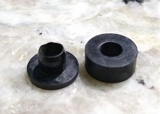

-
I feel like this is a dumb question, but I've been searching online, auto parts stores, and hardware stores, and I can't find anything to replace the spacers that you use between each injector and the lower intake manifold. I can't even find the part number for these plastic pieces in the FSM. Does anyone happen to know the Nissan part number or an easy replacement?
1986 300ZX N/A 5Speed project. Needs work, but that's the point, isn't it? -
What year and type? I've used 16614-D4200 for the thick washer kind of part, I have an 87 turbo. The other part number for that position is 16614-V5000, which is probably the early style.
Not exactly sure, but the left part might be 16613-V5000 COLLAR-INJECTOR HOLDER -
It's an 86 NA. I ended up finding a plastic washer at Lowes that was close for the bottom piece, but not the collar. I'm going to keep looking for a way to get a set for future use.
1986 300ZX N/A 5Speed project. Needs work, but that's the point, isn't it? -
I used a random plastic washer for a short while. When I replaced it with a new correct one, the bolt had got loose. Better check that after a while.
They're not too expensive though
https://nissanpartsdeal.com/parts/ni…614-d4200.html
You could also get one of the collar pieces and see if it's correct
https://nissanpartsdeal.com/parts/ni…613-v5000.html
Shouldn't be too hard to find a set of used ones either. -
I actually just saved myself $10 cleaning my old toolbox, I had a bag of both from an old parts car. Still glad to know where to get new ones though, I was at a loss before.
1986 300ZX N/A 5Speed project. Needs work, but that's the point, isn't it?

Copyright © 2006–. All rights reserved. Privacy Policy